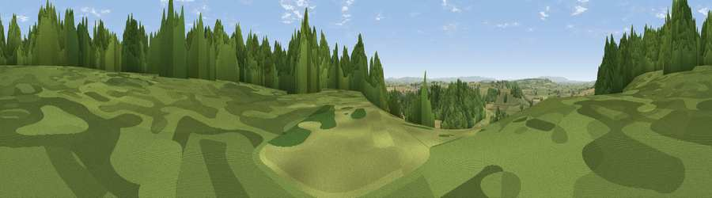

Worley Hill
#22271 in England · top 59% of its area beats it · near LittletonThe view, rendered

A 360° render of this exact spot computed from the terrain model, tree cover and land cover — summer colours, afternoon light, calibrated against photographs of famous viewpoints. Real trees, hedges and buildings will differ in detail.
The panorama
Grey silhouette: terrain skyline in each direction (720 bearings, Earth curvature and refraction included). Dashed green: skyline with trees (+15 m) and buildings (+8 m) as obstacles. Blue strip: how far the ground is visible on each bearing.
Where the view opens
Wedge length = distance to the farthest visible ground on that bearing (vegetation-aware). Rings at 10, 25 and 50 km.
What fills the view
44% woodland · 38% grassland · 17% cropland · 1% built-up
Angular shares of the visible panorama (visual magnitude), not map area. Landscape diversity 0.47 (0–1 Shannon).
Key numbers
More beautiful places nearby
The staircase of upgrades: each row has a higher view potential than everything closer. Driving times are estimates from straight-line distance, calibrated against real road routing — check an actual route before setting out.
| Place | Direction | Drive | Score |
|---|---|---|---|
| Viewpoint near Littleton | S · 0 km | ~1 min | 60.8 |
| Viewpoint near Littleton | NW · 1 km | ~2 min | 65.8 |
| Lollover Hill | WNW · 3 km | ~8 min | 66.4 |
| Viewpoint near Kingsdon | SSE · 4 km | ~9 min | 67.2 |
| Glastonbury Tor | N · 8 km | ~16 min | 75.8 |
| Socombe Hill | WNW · 14 km | ~25 min | 76.4 |
| Viewpoint near Lamyatt | ENE · 17 km | ~30 min | 77.8 |
| Viewpoint near Hewish | SSW · 23 km | ~37 min | 78.5 |
51.07316, -2.71172 · source: osm peak · position refined by local search. Computed location — check access rights before visiting.